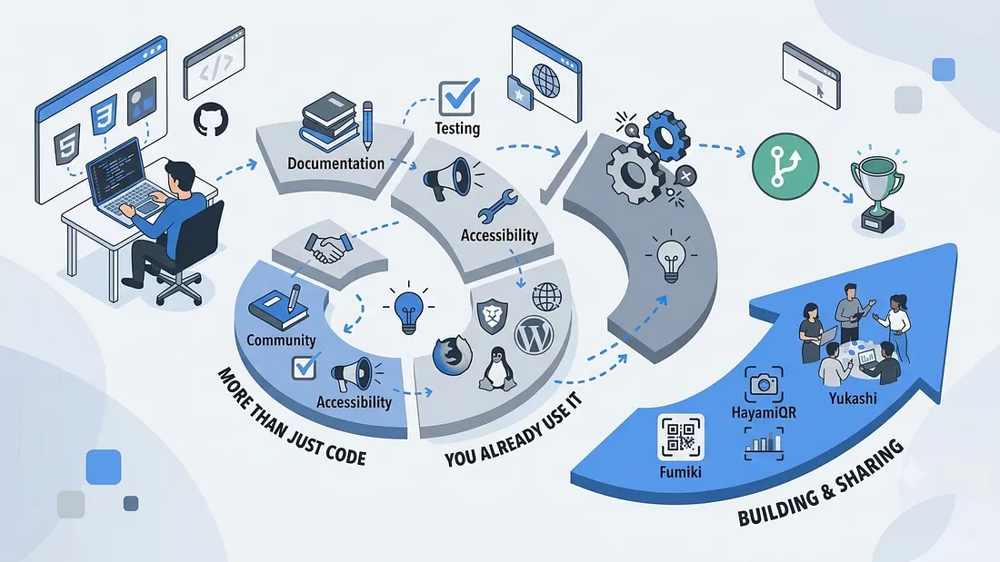

Open Source Is More Than Just Writing Code


"The most useful contribution is not always the largest one. Often it is the one that removes an obstacle someone else was about to encounter."
When I began learning web development, my attention was fixed on a narrow goal: understand how websites work and turn ideas into working pages. The learning was largely solitary — tutorials, small projects, and the usual cycle of writing code and debugging it.
At some point I encountered the term open source. I had seen it before, but I had no clear sense of what it involved or how anyone became part of it. So I began looking into it: learning Git commands, browsing GitHub, and reading the documentation of projects that interested me.
What became clear fairly quickly was that developers were not only building things privately. They were publishing their work and inviting others to study it, use it, and improve it. That raised a more interesting question than the one I had started with: was open source really just about writing code?
After building a few projects of my own and contributing to existing ones, I found the answer to be considerably broader than I had expected.
What Is Open Source?
Open-source software is software whose source code is available under a licence permitting people to use, study, modify, and redistribute it — within the terms of that licence. With closed software, you typically interact only with the finished product. With an open-source project, you can usually examine how it was built, follow the reasoning behind its decisions, and, if the project welcomes contributions, help improve it.
What I find valuable about this model is that learning no longer has to happen in isolation. You can study code written by someone far more experienced, ask questions in public, share what you have figured out, and collaborate with people you may never meet in person.
It is worth being precise, though: open source does not mean that anything is permitted. Every project carries its own licence, maintainers, and contribution guidelines. Checking those before starting is part of the process, not an optional extra.
Open Source Is Not Only About Coding
Before getting involved, I associated open source almost entirely with writing code. I see it differently now.
You can contribute by fixing a bug, implementing a feature, or making a page more responsive. You can equally contribute by improving documentation, testing a proposed change, writing a reproducible bug report, auditing accessibility, reviewing a pull request, or helping another contributor understand the project.
These contributions do not all look equally impressive in a screenshot, but each one improves the project in a real way.
Consider a concrete example. A developer follows a project's setup guide but gets stuck because one step is missing. Correcting that instruction may save the next ten people from hitting the same wall. That is a genuinely useful contribution, and it involved no new feature at all.
The objective is not to make the largest possible change. It is to understand what a project needs and help where you can.
You Probably Already Use Open-Source Software
Open source is not confined to one language or one kind of developer. It underpins operating systems, browsers, publishing platforms, and the tools developers reach for every day.
- Linux — an open-source operating-system kernel used across servers and embedded systems
- Mozilla Firefox — a browser whose development spans features, compatibility, accessibility, and testing
- WordPress — an open-source publishing platform supported by work on its core, themes, plugins, and documentation
- Git — the version-control system that made collaborative development practical in the first place
Git was particularly significant in my own path. Learning it gave me a way to manage my work, but more importantly it introduced me to the workflow that most open-source projects are built around.
These examples make an important point: open source is not a separate corner of software development. It is woven into the tools and technology most developers rely on without thinking about it.
What Should You Learn Before Contributing?
You do not need to know everything before your first contribution. I certainly did not. A handful of fundamentals will make the experience considerably less confusing, however.
Understand the technology you are interested in
If you work on the frontend, start with the fundamentals of HTML, CSS, and JavaScript, and look for projects using technologies you are already comfortable with. More advanced codebases become approachable as your confidence grows.
Learn the Git and GitHub workflow
Cloning a repository, creating a branch, committing changes, pushing, and opening a pull request form the core loop. You do not need to memorise every Git command, but fluency in the basic workflow matters far more than breadth.
Read the project documentation
Begin with the README and the contribution guidelines. Understand how to set the project up, run it locally, and test your changes. A small investment here prevents a great deal of wasted effort later.
Practise debugging
Not every issue arrives with an obvious solution. You will need to reproduce bugs, trace through unfamiliar code, read error messages carefully, and ask questions when you are genuinely stuck. That is part of the work rather than a sign of inexperience.
Be open to feedback
Your pull request may need changes before it can be merged. This is normal. A review is not a rejection; it is usually an opportunity to understand the codebase's conventions and improve your solution.
None of this has to be completed before you start. Most of it is learned while contributing. Waiting until you feel entirely ready is itself a way of not beginning.
Building My Own Open-Source Projects
Before contributing to other people's work, I began publishing projects of my own. Some of them are Fumiki, HayamiQR, and Yukashi.
Building and releasing my own projects gave me space to try ideas, solve problems, and make decisions without following a tutorial step by step. It also forced me to think beyond getting something to work once. If a project is going to continue, its structure, usability, and readability matter — particularly if another developer may one day open the code.
I still work on improving these projects. They are part of an ongoing learning process rather than something that became finished the moment a first version existed.
Publishing a project as open source also creates the possibility that someone else will find it useful. Whether a person adopts it, learns from it, or suggests an improvement, the work can extend beyond my own screen.
My Experience Contributing to Existing Projects
The opportunity to contribute to established open-source projects came after I entered the software industry and started my first job in the field.
During GirlScript Summer of Code 2025, I contributed to two projects. One of my contributions was merged into the main branch. Along the way, I ran into merge conflicts while updating my branch from the upstream repository and had to resolve them manually.
That experience changed how Git felt to me. Reading about merge conflicts is one thing; confronting them in a real project and working through the conflicting changes is quite another. It made clear why tracking branches carefully matters when several people are editing the same codebase.
Later I participated in SWOC 2026, contributing while holding a full-time role.
Balancing the two requires planning. A job has its own responsibilities, and open source demands enough time to understand a project, investigate issues, and make considered changes. Treating every project as something to rush through does not produce good work, so I had to be realistic about the time I could commit.
These experiences also clarified how different contributing to an existing project is from starting your own. You have to understand code someone else wrote, follow conventions you did not choose, and be willing to adjust your approach.
I am still looking for projects to contribute to. Participating in a couple of programmes does not mean the learning is finished; it simply provides more experience to build on.
What I Appreciate Most About Open Source
What I value most is seeing people contribute because they care about a project or believe it can help others.
Contributors regularly spend their time fixing bugs, improving documentation, helping beginners, or building features that benefit a wider community. They are not necessarily paid for every contribution, yet they continue to give their time and knowledge.
It is worth noting that open source is not defined by unpaid work. Paid developers, company-sponsored contributions, and funded maintainership are all part of the ecosystem. What matters to me is the collaboration itself: people sharing what they know and improving something together.
That idea carries into my own work. I want to keep improving my projects, keep learning from other developers, and build things that might genuinely be useful to someone else. Even a small contribution can make a difference to the person who needed it.
How to Make Your First Contribution
If you want to try contributing, start small. There is no requirement to begin with a major feature or a complex bug.
- Find a project that interests you. It could be a tool you already use or a project built with a technology you are learning.
- Read the README and contribution guidelines. Confirm how the project works and whether it accepts contributions.
- Explore the issues. Look for a task that matches your current skills. Some projects label beginner-friendly issues, but read the discussion before choosing one.
- Set the project up and investigate. Try to reproduce the issue or understand the improvement being requested.
- Make a focused change. Create a branch, test your work, and explain clearly what you changed and why when you open a pull request.
- Learn from the review. If the maintainer requests changes, treat the feedback as part of the process rather than a setback.
The core workflow is the same across most projects, and it is worth becoming comfortable with it:
# 1. Clone your fork and register the upstream remote
git clone https://github.com/your-username/project.git
cd project
git remote add upstream https://github.com/original-owner/project.git
# 2. Create a branch for your change
git checkout -b fix/setup-guide-typo
# 3. Commit and push
git add .
git commit -m "Fix missing step in setup guide"
git push origin fix/setup-guide-typo
# 4. Open a pull request on GitHub from your branchBe prepared for merge conflicts
When multiple developers work on the same project, their changes can overlap. Another contributor might update a file while you are working from an older version of it. When you attempt to merge your changes with the latest code, Git may report a conflict.
Resolving one means reviewing the conflicting sections, deciding what should be kept, and testing the result before continuing:
# Fetch the latest changes from the original repository
git fetch upstream
git merge upstream/main
# Git reports the conflicting files
# CONFLICT (content): Merge conflict in src/components/Navbar.jsx
# Open the file, resolve the marked sections, then:
git add src/components/Navbar.jsx
git commit -m "Resolve merge conflict with upstream/main"
git push origin fix/setup-guide-typoI encountered merge conflicts while contributing to an open-source project, and doing so made it clear why keeping a branch current and understanding Git's workflow are not optional skills.
If your first contribution turns out to be documentation, a small UI fix, a test, or a detailed bug report, that is entirely appropriate. A useful contribution does not have to be complicated. The goal is to learn how to work with a project and its community.
Conclusion
When I first encountered open source, I was still working out how Git, GitHub, and collaborative development actually fit together. Since then I have built my own projects, contributed through GSSoC 2025 and SWOC 2026, resolved merge conflicts, and learned a great deal from working inside codebases I did not write.
I continue to improve Fumiki, HayamiQR, and Yukashi, and I continue to look for new projects to contribute to. There is still a great deal left to learn, which is a large part of what keeps the work interesting.
For me, open source is not measured by the volume of code written or the number of pull requests merged. It is also about learning from other developers, understanding how real projects are maintained, sharing knowledge, and solving problems collaboratively.
If you are considering contributing, there is no need to wait until you consider yourself an expert. Start with what you already know, stay curious, and look for something you can genuinely help improve.
The most valuable part of open source is often not the code you contribute. It is what you learn along the way and what you help build with others.